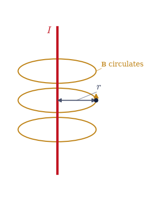
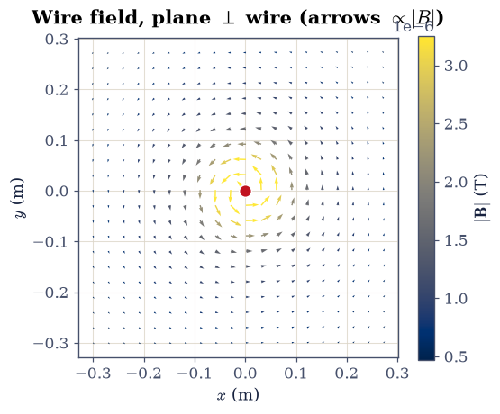
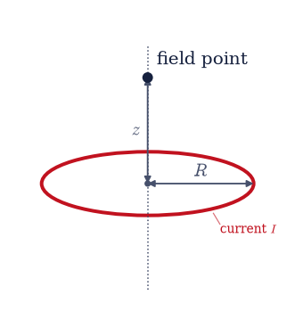
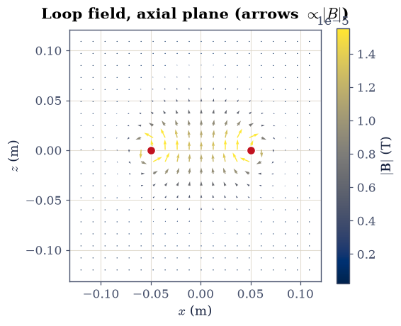
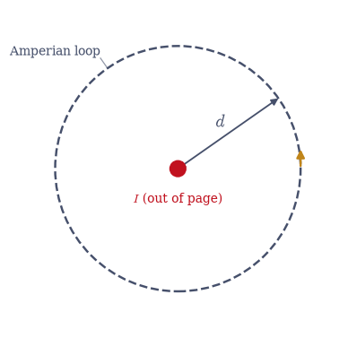
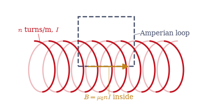
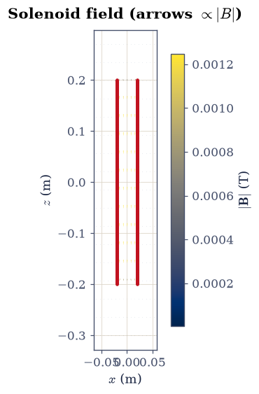
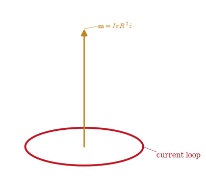
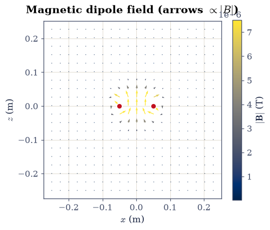

3.6 Magnetostatics and the Vector Potential#
Notebook overview#
Everything in this notebook is the magnetic mirror of the three that came before. Where static charges made an electric field, steady currents make a magnetic field; where Coulomb’s law summed contributions from charge elements, the Biot–Savart law sums them from current elements; where Gauss’s law turned symmetry into the field, Ampère’s law does the same for magnetism. We will draw those parallels at every step, because the mirror is the fastest way to learn magnetostatics once electrostatics is in hand.
Two things, though, are genuinely new. First, the magnetic field circulates around its source rather than pointing toward it, a fact encoded by the cross product in Biot–Savart, which we introduce in line with the physics. And there is no magnetic charge: \(\nabla\cdot\mathbf B=0\) everywhere, the second of the four field equations the volume assembles, the magnetic counterpart of \(\nabla\cdot\mathbf E=\rho/\varepsilon_0\) but with zero on the right.
Because \(\mathbf B\) is divergence-free, it can always be written as the curl of a vector potential, \(\mathbf B=\nabla\times\mathbf A\), the magnetic analogue of the scalar potential \(V\) but a vector. And here we meet an idea that will grow to dominate the rest of physics: \(\mathbf A\) is not unique. We can add the gradient of any scalar to it without changing \(\mathbf B\) at all. That freedom is gauge invariance. We meet it concretely and computationally here, show two different \(\mathbf A\) fields giving the identical \(\mathbf B\), and plant the arc that runs forward to Maxwell (§3.8), the relativistic field tensor (§3.12), and the quantum Aharonov–Bohm effect (Vol VI).
Everything is in SI units, with \(\mu_0 = 4\pi\times10^{-7}\,\)T·m/A. Steady currents make static fields, so every figure here is a still; there is no motion to animate.
How to read the checks. Each exercise ends with a
validatecall against an independent fact: a Biot–Savart integral matching \(\mu_0 I/2\pi r\), a circulation equal to \(\mu_0 I\), a numerical curl recovering \(\mathbf B\), two gauges differing by an exact gradient. A ✓ is strong evidence; a ✗ is a prompt to locate the discrepancy, not a verdict.
Theory in brief#
Steady currents and the magnetic field#
Magnetostatics treats steady currents (constant in time, \(\partial_t\rho=0\), so \(\nabla\cdot\mathbf J=0\)) and the static magnetic field they produce. It runs parallel to electrostatics throughout, with current density \(\mathbf J\) in the role of charge density and \(\mathbf B\) in the role of \(\mathbf E\).
The Biot–Savart law#
The field of a current element \(I\,d\boldsymbol\ell\) is
the magnetic mirror of Coulomb’s \(d\mathbf E=(1/4\pi\varepsilon_0)\,dq\, \hat{\mathbf r}/r^2\). The decisive difference is the cross product: the field is perpendicular to both the current and the line of sight, so \(\mathbf B\) circulates around the current (right-hand rule) instead of pointing toward it.
Ampère’s law#
The magnetic analogue of Gauss’s law is Ampère’s law,
the line integral of \(\mathbf B\) around a closed loop equals \(\mu_0\) times the current threading it. When symmetry makes \(\mathbf B\) constant and tangent along a well-chosen loop, it gives the field directly (wire, solenoid, toroid). Its differential form is \(\nabla\times\mathbf B=\mu_0\mathbf J\). Both forms follow from the Biot–Savart law by a curl computation that Griffiths [Gri17] (ch. 5) carries out in full.
No magnetic monopoles#
There is no magnetic charge, so
Field lines of \(\mathbf B\) never begin or end; they close on themselves. This is the second of the four static field equations, the magnetic counterpart of \(\nabla\cdot\mathbf E=\rho/\varepsilon_0\) with zero on the right.
The vector potential#
Any divergence-free field is a curl (a consequence of the Helmholtz theorem; Griffiths [Gri17], appendix B, proves it), so Eq. 222 lets us write
with \(\mathbf A\) the vector potential, the magnetic analogue of \(V\) but a vector. Writing \(\mathbf B\) this way builds \(\nabla\cdot\mathbf B=0\) in automatically (the divergence of a curl is identically zero).
Gauge freedom#
The vector potential is not unique. Because the curl of a gradient vanishes, \(\nabla\times(\nabla\chi)=0\), the transformation
leaves \(\mathbf B=\nabla\times\mathbf A\) unchanged for any scalar field \(\chi\). This freedom to redefine \(\mathbf A\) without touching the physics is gauge invariance. A common way to use up the freedom is the Coulomb gauge \(\nabla\cdot\mathbf A=0\), a convenient choice, not a physical constraint. We make all of this concrete in Exercise 7, and pitch the larger arc there.
Setup#
Data and instruments only: the vacuum permeability, the series palette, the two wire geometries the problems specify (a long straight wire, a circular loop), and the numerical divergence you already built by hand for \(\nabla\cdot\mathbf E\) in §3.1 and §3.3, restated here as one call. This notebook’s own machinery is not here: you write the Biot–Savart integrator in Exercise 1 and the numerical curl in Exercise 6, and every field and every gauge check downstream runs on those two. No randomness appears anywhere in this notebook.
The Setup below holds this notebook’s data and instruments — nothing you are asked to build. It is collapsed so the building stays yours; expand it whenever you want the details.
Exercise 1 — Biot–Savart: the straight wire#
The field of a current element Eq. 220 is built from a cross product, \(d\mathbf B\propto I\,d\boldsymbol\ell\times\hat{\mathbf r}\), which is what makes the magnetic field circulate around the current rather than point toward it like Coulomb’s. Summed along a long straight wire on the \(z\)-axis, the contributions give a purely azimuthal field whose magnitude Ampère’s law (Exercise 4) will confirm is \(\mu_0 I/2\pi r\) (Fig. 238). The wire here carries \(I=1\,\)A and runs from \(z=-100\) to \(z=+100\,\)m in 4000 segments — effectively infinite at the distances we probe.
Write
biot_savart(path, current, P), the numerical Biot–Savart integral Eq. 220: take the path’s straight segments, and accumulate \((\mu_0 I/4\pi)\,d\boldsymbol\ell\times\hat{\mathbf R}/R^2\) over them withnumpy.cross, measuring \(\mathbf R\) from each segment’s midpoint, and return the field at pointsPof shape(..., 3). Loop over segments rather than over field points, so that a whole 3-D grid ofPcosts no extra memory. Write this one yourself — the implementation is the lesson, and every magnetic field in this notebook comes out of it.Certify it against the answer Ampère’s law (Exercise 4) gives: evaluate at field points \(r=0.1\) and \(0.2\,\)m in the \(z=0\) plane and compare \(|\mathbf B|\) to \(\mu_0 I/2\pi r\).
Confirm the field is azimuthal (perpendicular to both the wire and the radius) (Fig. 239).

Fig. 238 A straight current-carrying wire along \(\hat{\mathbf z}\) (red), with a field point at perpendicular distance \(r\). By the cross product in the Biot–Savart law, the magnetic field (amber) circulates around the wire in azimuthal loops (right-hand rule), perpendicular to both the current and the radius, rather than pointing toward the source as the electric field would.#
r=0.1 m: |B| Biot–Savart = 2.000063e-06 T, Ampère μ₀I/2πr = 2.000000e-06 T, ratio = 1.00003
r=0.2 m: |B| Biot–Savart = 9.999980e-07 T, Ampère μ₀I/2πr = 1.000000e-06 T, ratio = 1.00000
field at (0.1,0,0): B = [0.00000000e+00 2.00006297e-06 0.00000000e+00] T (azimuthal: |Bx|+|Bz| / |B| = 0.00e+00)

Fig. 239 Faithful map of the wire’s magnetic field in the plane perpendicular to it (ecp.draw.field_quiver): each arrow’s length and colour encode \(|\mathbf B|\propto 1/r\). The field forms closed azimuthal loops around the wire (which pierces the plane at the centre), circulating counter-clockwise for current out of the page, and weakens with distance.#
Validation 1#
✓ Biot–Savart reproduces the wire field μ₀I/2πr [got 1.00003 vs expected 1 (rtol=0.001, atol=1e-09)]
✓ the wire's field is azimuthal (perpendicular to wire and radius) [got 0 vs expected 0 (rtol=1e-06, atol=1e-06)]
True
Exercise 2 — Biot–Savart: the circular loop#
A current loop is the magnetic workhorse: it is the elementary magnetic dipole, and its on-axis field has a clean closed form. Summing Biot–Savart around the ring, the transverse contributions cancel by symmetry and only the axial component survives (Fig. 240),
The loop here has radius \(R=0.05\,\)m, carries \(I=1\,\)A in the \(xy\)-plane, and is traced by 400 segments.
Integrate the Biot–Savart law with the
biot_savartyou wrote in Exercise 1, summed over the ring, for the on-axis \(B_z\) at \(z=0,\,0.05,\,0.1\,\)m, and compare to the closed form.Map the field in the axial plane (Fig. 241).
/tmp/ipykernel_3251/2088655233.py:8: UserWarning: linestyle is redundantly defined by the 'linestyle' keyword argument and the fmt string "-" (-> linestyle='-'). The keyword argument will take precedence.
ax.plot([0, 0], [-1.0, 1.3], "-", color=SOFT, lw=1.0, ls=":")

Fig. 240 A circular current loop of radius \(R\) in the \(xy\)-plane, with the on-axis field point at height \(z\). By symmetry the transverse Biot–Savart contributions cancel and only the axial field \(B_z\) survives, giving the closed form \(\mu_0 I R^2/2(R^2+z^2)^{3/2}\). The loop is the elementary magnetic dipole.#
z=0.0 m: Bz Biot–Savart = 1.256702e-05 T, closed form = 1.256637e-05 T, ratio = 1.00005
z=0.05 m: Bz Biot–Savart = 4.442906e-06 T, closed form = 4.442883e-06 T, ratio = 1.00001
z=0.1 m: Bz Biot–Savart = 1.123945e-06 T, closed form = 1.123970e-06 T, ratio = 0.99998

Fig. 241 The current loop’s field in the axial (\(x\)–\(z\)) plane (ecp.draw.field_quiver, arrows \(\propto|\mathbf B|\)). The two red marks are where the ring pierces the plane. The field threads up through the loop and returns around the outside in closed loops — the dipole pattern, with no sources or sinks anywhere (\(\nabla\cdot\mathbf B=0\)).#
Validation 2#
✓ the loop's on-axis field matches the closed form μ₀IR²/2(R²+z²)^{3/2} [got 5.16641e-05 vs expected 0 (rtol=1e-06, atol=0.001)]
True
Exercise 3 — No magnetic monopoles: ∇·B = 0#
The deepest structural fact of magnetostatics is that there is no magnetic charge:
\(\nabla\cdot\mathbf B=0\) everywhere Eq. 222. Field lines of \(\mathbf B\) never
start or stop. We test it on the loop’s field by taking the numerical divergence
(a sum of central differences with numpy.gradient, the Setup’s div_3d) on a
3-D grid, away from the ring itself. The exact value is identically
zero; the small residual that remains is pure discretization (the central
differences straddle the steep field near the ring), so we measure it on nodes a few
grid steps from the current and scale the tolerance to the grid, the same philosophy
as the corner discontinuity of §3.4.
Build the loop’s \(\mathbf B\) — the loop of Exercise 2, the
biot_savartyou wrote in Exercise 1 — on a \(31^3\) grid over \([-0.15, 0.15]^3\,\)m and take \(\nabla\cdot\mathbf B\) withdiv_3d.Confirm it vanishes away from the ring, measured against the natural size of a finite-difference derivative there, \(\max|\mathbf B|/h\).
grid 31³, spacing h=0.0100 m
max |∇·B| / (|B|/h) away from the ring = 8.38e-09 (exact value is 0: no monopoles)
Validation 3#
✓ ∇·B vanishes away from the current — there are no magnetic monopoles [relative residual 8.38e-09 (pure discretization; → 0 as the grid refines)]
True
Exercise 4 — Ampère’s law#
Ampère’s law Eq. 221 is the magnetic Gauss’s law: \(\oint\mathbf B\cdot d\boldsymbol\ell=\mu_0 I_{\text{enc}}\), the circulation of \(\mathbf B\) around any closed loop equals \(\mu_0\) times the enclosed current, independent of the loop’s size or shape (Fig. 242). For the straight wire it turns the azimuthal symmetry directly into \(B=\mu_0 I/2\pi r\). The Amperian loop here is a circle of radius \(d=0.15\,\)m in the \(z=0\) plane, drawn around the wire of Exercise 1 (\(I=1\,\)A) and sampled at 400 azimuthal points.
Compute the circulation \(\oint\mathbf B\cdot d\boldsymbol\ell\): the field from the
biot_savartyou wrote in Exercise 1, the line integral bynumpy.trapezoidover the azimuth against the loop’s tangent \(d\boldsymbol\ell/d\varphi = d\,(-\sin\varphi,\cos\varphi,0)\).Confirm it equals \(\mu_0 I_{\text{enc}}\).

Fig. 242 Ampère’s law for the straight wire: a circular Amperian loop of radius \(d\) encircling the current \(I\). The field is tangent to the loop everywhere and constant in magnitude, so \(\oint\mathbf B\cdot d\boldsymbol\ell = B\,(2\pi d) = \mu_0 I\) — independent of \(d\), the magnetic analogue of Gauss’s law.#
∮B·dl around d=0.15 m = 1.256636e-06 vs μ₀I = 1.256637e-06 (ratio 1.00000)
Validation 4#
✓ Ampère's law: ∮B·dl = μ₀I_enc [got 1.25664e-06 vs expected 1.25664e-06 (rtol=0.001, atol=1e-09)]
True
Exercise 5 — The solenoid (student)#
A solenoid is Ampère’s law’s showcase: a long, tightly wound coil with \(n\) turns per unit length carrying current \(I\). A rectangular Amperian loop with one side inside and one far outside (Fig. 243) gives a uniform interior field \(B=\mu_0 n I\) along the axis and (ideally) zero outside. We confirm it by superposing the Biot–Savart fields of many individual loops. The coil here has \(n=1000\) turns/m, carries \(I=1\,\)A, and is \(0.4\,\)m long with radius \(0.02\,\)m.
Build the finite solenoid as a stack of current loops, summed with the
biot_savartyou wrote in Exercise 1, evaluate \(B_z\) on the axis at the centre, and compare to \(\mu_0 n I\) (a finite-length tolerance applies).Check the field is far smaller outside (Fig. 244).

Fig. 243 A long solenoid (\(n\) turns per unit length, current \(I\)) with a rectangular Amperian loop straddling the wall. Only the inside leg contributes (\(\mathbf B\approx0\) outside, \(\perp\) the radial legs), so \(\oint\mathbf B\cdot d\boldsymbol\ell = B\,L = \mu_0 (nL) I\), giving the uniform interior field \(B=\mu_0 n I\).#
interior B_z (centre) = 1.247600e-03 T vs μ₀nI = 1.256637e-03 T (ratio 0.9928)
B_z half a length beyond the end = 2.777e-06 T (0.223% of interior)

Fig. 244 Axial-plane field of the finite solenoid (ecp.draw.field_quiver, arrows \(\propto|\mathbf B|\); coil cross-sections marked red). The field is strong and uniform along the interior axis (\(B\approx\mu_0 nI\)) and fans out into weak fringing fields at the ends, the closed loops returning outside — the controlled uniform field a solenoid is built to provide.#
Validation 5#
✓ the solenoid interior field is μ₀nI [got 0.0012476 vs expected 0.00125664 (rtol=0.02, atol=1e-09)]
✓ the solenoid field is far weaker outside than inside [outside/inside = 0.002]
True
Exercise 6 — The vector potential: B = ∇×A#
Because \(\nabla\cdot\mathbf B=0\) Eq. 222, the field is always a curl, \(\mathbf B=\nabla\times\mathbf A\) Eq. 223. Working with \(\mathbf A\) therefore needs the numerical curl — six central differences of the components, paired antisymmetrically, the circulation-detecting counterpart of the divergence used in Exercise 3, and the operator the whole back half of this notebook runs on. The case with a known answer that certifies it is a uniform field \(\mathbf B=B_0\hat{\mathbf z}\), whose symmetric (“Coulomb-gauge”) vector potential is \(\mathbf A=\tfrac12\mathbf B\times\mathbf r=\tfrac{B_0}{2}(-y,\,x,\,0)\); here \(B_0=2\,\)T on a \(21^3\) grid over \([-1,1]^3\).
Write
curl_3d(Fx, Fy, Fz, x, y, z), returning the three components \((\partial_y F_z-\partial_z F_y,\ \partial_z F_x-\partial_x F_z,\ \partial_x F_y-\partial_y F_x)\) fromnumpy.gradientcentral differences on anindexing='ij'grid. Write this one yourself — the implementation is the lesson: a swapped axis or a flipped sign in one of those six terms is exactly the error the certification below exists to catch.Build \(\mathbf A=\tfrac{B_0}{2}(-y,x,0)\) on the grid, take its numerical curl, and confirm it recovers the uniform \(\mathbf B=B_0\hat{\mathbf z}\) on the interior — central differences are exact for this linear \(\mathbf A\), so only the one-sided stencils at the box faces are excluded.
∇×A on the interior: max|Bx|=8.88e-16, max|By|=8.88e-16, max|Bz−B₀|=1.78e-15 T
Validation 6#
✓ B = ∇×A recovers the uniform field B₀ẑ from the vector potential [got 3.55271e-15 vs expected 0 (rtol=1e-06, atol=0.0001)]
True
Exercise 7 — Gauge freedom#
Here is the idea that grows to organize all of physics, made concrete. The vector potential is not unique: adding \(\nabla\chi\) for any scalar \(\chi\) leaves \(\mathbf B=\nabla\times\mathbf A\) unchanged Eq. 224, because \(\nabla\times(\nabla\chi)=0\). We demonstrate it with two genuinely different potentials for the same uniform \(\mathbf B=B_0\hat{\mathbf z}\): the symmetric Coulomb-gauge \(\mathbf A_1=\tfrac{B_0}{2}(-y,x,0)\) and the Landau-gauge \(\mathbf A_2=(-B_0 y,0,0)\). Both have the same curl, they differ by an exact gradient, and \(\mathbf A_1\) satisfies the convenient Coulomb gauge \(\nabla\cdot\mathbf A=0\). Both potentials live on the \(21^3\) grid of Exercise 6.
Confirm with the
curl_3dyou wrote in Exercise 6 that \(\nabla\times\mathbf A_1=\nabla\times\mathbf A_2=B_0\hat{\mathbf z}\).Confirm \(\mathbf A_1-\mathbf A_2\) equals \(\nabla\chi\) for \(\chi=B_0 xy/2\) (an exact gauge transformation).
Verify \(\mathbf A_1\) satisfies \(\nabla\cdot\mathbf A=0\) with the Setup’s
div_3d.
This freedom is gauge invariance, and it is no accident of magnetostatics. It returns as a tool in §3.8, where the Lorenz gauge decouples Maxwell’s equations into wave equations; as structure in the relativistic capstone §3.12, where the four-potential and the manifestly gauge-invariant field tensor make it geometric; and as physics in the quantum volume (Vol VI), where the Aharonov–Bohm effect shows \(\mathbf A\) has observable consequences even where \(\mathbf B=0\). Its root is the symmetry–conservation link of Noether (§2.2): a global phase symmetry gives charge conservation, and local gauge symmetry is its generalization. We plant the arc here and move on.
both gauges give B_z=B₀: residual 3.55e-15 T
A₁−A₂ = ∇χ (χ=B₀xy/2): max residual 2.89e-15
Coulomb gauge ∇·A₁ = 0: max |∇·A₁| = 1.33e-15
Validation 7#
✓ two gauges (Coulomb and Landau) give the same physical field B [got 3.55271e-15 vs expected 0 (rtol=1e-06, atol=0.0001)]
✓ the two vector potentials differ by a pure gradient ∇χ — a gauge transformation [got 2.88658e-15 vs expected 0 (rtol=1e-06, atol=0.0001)]
✓ the symmetric choice satisfies the Coulomb gauge ∇·A = 0 [got 1.33227e-15 vs expected 0 (rtol=1e-06, atol=1e-06)]
True
Exercise 8 — The magnetic dipole (student)#
Far from a current loop, the field takes the magnetic dipole form, the exact mirror of the electric dipole of §3.1/§3.5: it falls as \(1/r^3\) and is set by the magnetic moment \(\mathbf m=I\pi R^2\hat{\mathbf z}\) (Fig. 245). On axis, the loop’s field \(\mu_0 I R^2/2(R^2+z^2)^{3/2}\) reduces for \(z\gg R\) to \(\mu_0 m/2\pi z^3\), the \(1/r^3\) dipole falloff. There is no magnetic monopole term (the series starts at the dipole), because \(\nabla\cdot\mathbf B=0\). The ring is the one of Exercise 2 (\(R=0.05\,\)m, \(I=1\,\)A), probed in the far zone at \(z=0.5\,\)m — ten radii out.
Evaluate the on-axis \(B_z\) with the
biot_savartyou wrote in Exercise 1 at \(z\) and \(2z\), and confirm the ratio is \(\approx 8\), the signature of a \(1/r^3\) dipole.Compare the far field to \(\mu_0 m/2\pi z^3\) with \(m=I\pi R^2\) (Fig. 246).

Fig. 245 A small current loop with magnetic moment \(\mathbf m = I\pi R^2\hat{\mathbf z}\) (amber). Seen from far away its field is a magnetic dipole, falling as \(1/r^3\) with the same angular pattern as an electric dipole — but with no monopole term, since \(\nabla\cdot\mathbf B=0\) forbids magnetic charge.#
on-axis B_z(z)/B_z(2z) = 7.9111 (1/r³ ⇒ 8)
far field B_z(0.5) = 1.2380e-08 T vs μ₀m/2πz³ = 1.2566e-08 T (ratio 0.9851)

Fig. 246 The current loop’s field over a wide axial-plane view (ecp.draw.field_quiver, arrows \(\propto|\mathbf B|\)): the closed dipole loops, threading up through the ring and returning outside, identical in form to the electric dipole’s field but sourced by current rather than charge. Far out the field is the magnetic-dipole \(1/r^3\) pattern.#
Validation 8#
✓ the current loop's far field falls as 1/r³ (a magnetic dipole) [got 7.91106 vs expected 8 (rtol=0.02, atol=1e-09)]
True
Exercise 9 — The four field equations so far, and what is missing#
Step back and collect what we have built. Across electrostatics and magnetostatics we have assembled four field equations:
These are Maxwell’s equations in the static limit. They are almost the whole story, but two of them change the moment fields vary in time. A changing magnetic field makes \(\nabla\times\mathbf E\) pick up a term \(-\partial_t\mathbf B\) (Faraday’s induction, §3.7), so the electric field is no longer curl-free. And consistency with charge conservation forces \(\nabla\times\mathbf B\) to gain a term \(\mu_0\varepsilon_0\,\partial_t\mathbf E\) (Maxwell’s displacement current, §3.8). With those two additions the equations couple \(\mathbf E\) and \(\mathbf B\) into a self-sustaining wave, and light appears.
The static story closes with a measurement of the fourth equation in its current-free case: away from the ring the current density is zero, so Ampère’s differential law demands \(\nabla\times\mathbf B=0\) there. The time-derivative terms are identically zero here (the field is static), so neither dynamic Maxwell term is active yet. We are two terms, and two notebooks, from light.
Take the numerical curl of the loop field already gridded in Exercise 3, with the
curl_3dyou wrote in Exercise 6, and confirm it vanishes off the current — on the same off-ring nodes and against the same derivative scale as the divergence.
max |∇×B| / (|B|/h) away from the ring = 4.80e-09 (J = 0 there)
∇·E = ρ/ε₀ — Gauss (§3.3)
∇·B = 0 — no monopoles (here)
∇×E = 0 — electrostatics (§3.2)
∇×B = μ₀J — Ampère (here)
dynamic terms (static limit): ∂B/∂t = 0, ∂E/∂t = 0 → added in §3.7 and §3.8
Validation 9#
✓ ∇×B vanishes off the current (Ampère's differential law, measured), closing the static quartet [relative curl residual 4.80e-09 away from the ring]
True
Notebook summary#
A vectorised Biot–Savart integrator (
numpy.cross): the straight wire \(B=\mu_0I/2\pi r\) (azimuthal) and the loop on-axis \(\mu_0IR^2/2(R^2+z^2)^{3/2}\).\(\nabla\cdot\mathbf B=0\) away from the current (no monopoles); Ampère’s \(\oint\mathbf B \cdot d\boldsymbol\ell=\mu_0 I\) (
numpy.trapezoid); the solenoid interior \(\mu_0 nI\); the vector potential \(\mathbf B=\nabla\times\mathbf A\) by numerical curl; and the loop’s \(1/r^3\) magnetic-dipole far field.The gauge-freedom centrepiece: Coulomb- and Landau-gauge \(\mathbf A\) giving the same \(\mathbf B\) and differing by an exact gradient \(\nabla\chi\). The four static field equations assembled, with the two time-derivative terms (§3.7, §3.8) still zero.
Outlook#
The magnetic scalar potential. In current-free regions \(\nabla\times\mathbf B=0\), so \(\mathbf B\) can briefly be written as \(-\nabla\Omega\) like an electric field; it fails wherever current flows, which is why the vector potential is the general tool.
Forces and energy. The force between currents defines the ampere; a current distribution stores magnetic energy \(\tfrac12 L I^2\), the magnetic mirror of the capacitor’s \(\tfrac12 C V^2\).
Gauges and their uses. The Coulomb gauge here versus the Lorenz gauge that decouples Maxwell’s equations (§3.8); the Aharonov–Bohm effect, where \(\mathbf A\) is physically observable even where \(\mathbf B=0\) (Vol VI).
Forward links. Induction (§3.7), the displacement current and electromagnetic waves (§3.8), the four-potential and field tensor (§3.12), gauge invariance in quantum mechanics (Vol VI), and its Noether root (§2.2).